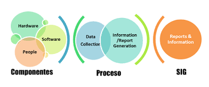

El sistema de información es un sistema cuyo principal proposito es gestionar y dar acceso controlado a una base de datos de informacion.Tambien es una coleccion de componentes interrelacionados que trabajan conjuntamente para cumplir algun objetivo.información es una serie de datos procesados, que constituyen un mensaje cambiando el estado de conocimiento del sujeto o sistema que recibe tal mensaje.
los sistemas son distintos uno de otro, depende de los requerimientos de cada empresa;en conclusion, el sistema es simplemente la suma de sus partes.el sistema de informacion involucra los siguientes elementos:
información
talento humano
recursos
los sistemas de informacion estan formados por:hardware,software,talento humano,procesamiento de datos
son sistemas de informacion computarizados desarrollados para procesar grandes cantidades de informacion para las trnsacciones de negocios rutinarias, como ser: inventario,pedidos,compras,etc.los TPS se encargan de recolectar,almacenar,modificar,y recuperar,toda la informacion generada por las trnsacciones producidas en una organizacion
sistema de automatizacion de la oficina (OAS) y sistemas de trabajo del conocimiento(KWS)
los sistemas de automatizacion de la ofifcina, apoyan a los trabajadores de datos quienes por lo general no generran conocimientos nuevos; si no mas bien, analizan la informacion con el proposito de transfromar los datos o manopularlos de alguna manera antes de compatirlos o, en su caso, distribuirlos formalmente con el resto de la organizacion y en ocasiones más allá de la misma. los aspectos más conocidos de los sistemas OAS son:
* El procesamiento de palabras.
* las hojas de calculo.
* El diseño gráfico por computadora.
* El procesamiento de palabras.
* La planificación electrónica y la comunicación a través del correo de voz,correo electrónico y telecoferencias.
los sistemas de trabajo de conocimiento, brindan apoyo a profesionales como los cientificos, ingenieros y medicos, ayudandoles a crear conocimiento y a integrarlo a su organización o la sociedad
sistema de informacion gerencial(MIS)

los MIS son sistemsas de información computarizados que funcionan debido a la inetracción entre las personas y las comutadoras. no sustituyen a los sistemas de procesamiento de transacciones; más bien, todos los sistemas de MIS incluyen el procesamiento de transacciones.
Este tipo de sistemas ayuda a los administradores a tomar desiciones estructuradas y resolver problemas del nivel medio de la empresa; organizando,filtrando y totalizando los datos para entregar información en forma periodica con un formato y establecido y así apoyar las decisiones estructuradas.